In last month’s issue, I shared my own favorite things to do in Palm Springs, the places I return to, the moments I treasure, and the small rituals that make the desert feel like home. In this issue, I’m turning the lens outward. Instead of my favorites, I wanted to explore the favorite things of the people around me, friends, neighbors, and fellow travelers whose lives have become intertwined with mine here in Palm Springs and beyond.
Their stories span cities, careers, and unexpected paths, but they are all connected by a shared appreciation for beauty, connection, and the details that give everyday life meaning. This issue is a portrait of them — and the simple things each of them holds closest.
Doris Hart
Originally from Germany, Doris Hart moved to Chicago in the 1960s before eventually settling in Palm Springs nearly 30 years ago with her late husband, Dr. Cecil Hart. Together, they purchased a charming Spanish-style home once owned by actress Dorothy Lamour. Today, vintage photos of Dorothy Lamour still hang in Doris’s hallway, paying homage to the Old Hollywood glamour so prevalent in Palm Springs.
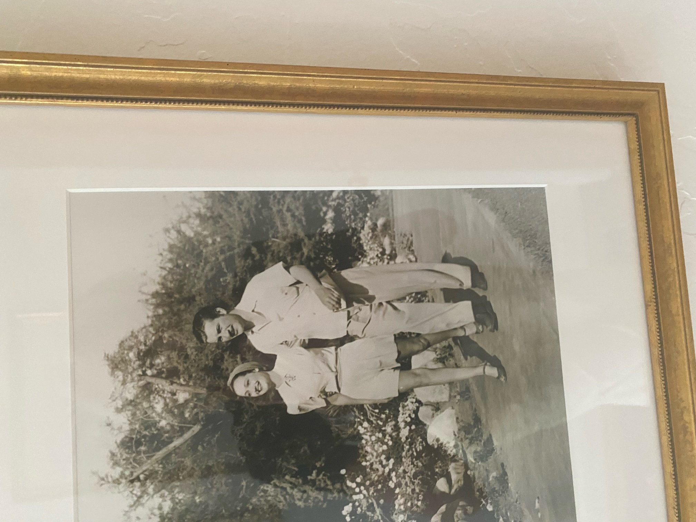
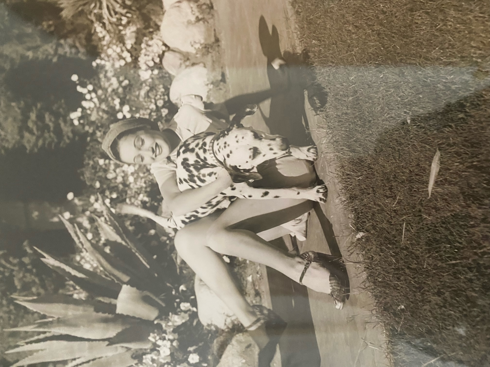
But Doris says her true favorite thing is her family. Her children and grandchildren visit so often that anyone hoping to stay with Doris knows they’d better reserve their spot months in advance. She also treasures the many friends she’s made over the years, along with her beautiful garden and the sunny Palm Springs weather that continues to make her feel at home.
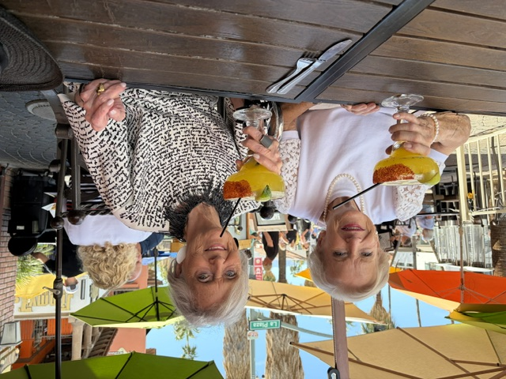
Cary Frank and John Cannon
Cary Frank and John Cannon, two of my dear friends and renowned interior designers from Chicago, recently made Palm Springs their permanent home. They live just outside Palm Springs in Mission Hills, an area well known for the famous Diana Shore Tennis Tournament. Their home is a stunning modern gem — impeccably designed and filled with an extraordinary collection of contemporary art.
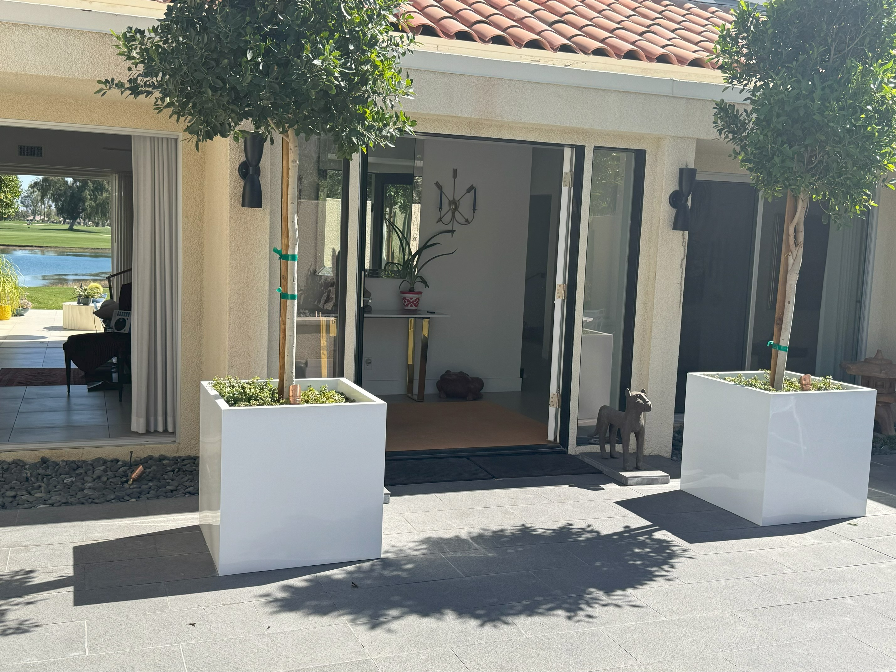
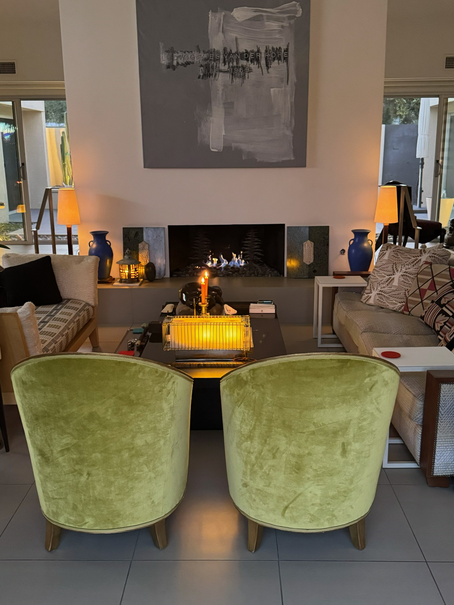
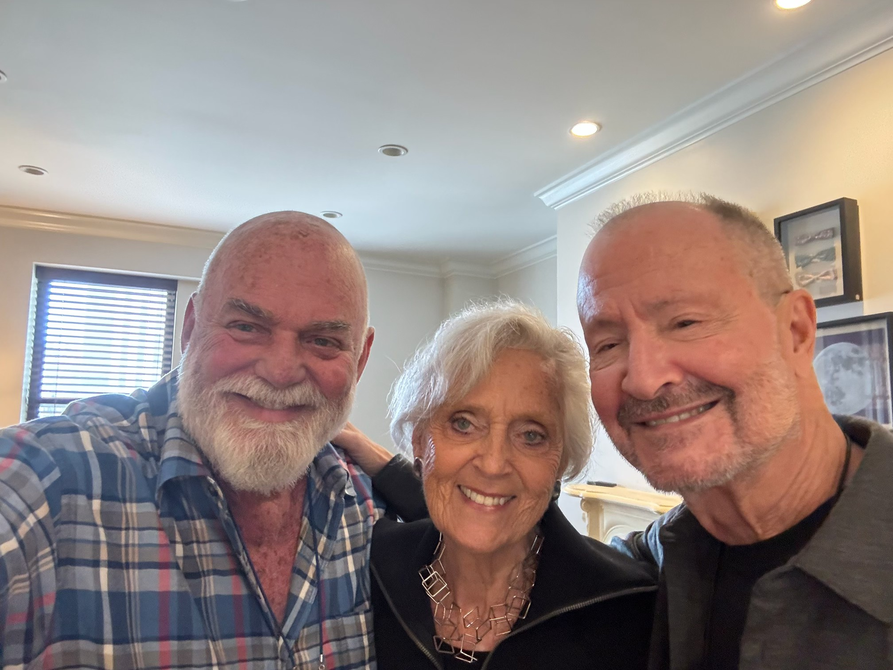
When asked about his favorite thing, Cary answered simply: waking up each morning to blue skies and palm trees. John’s response was even sweeter — his favorite thing is being married to Cary.
Steven Maass
One of my newer friends, Steven Maass, is a communications consultant and writer who originally split his time between Chicago and Wisconsin. After enduring the polar vortex winters of the Midwest, Steven began escaping to Palm Springs, first visiting during Modernism Week after a friend introduced him to the city’s celebrated mid-century modern architecture and design culture. He fell in love with the desert almost immediately and eventually decided to make Palm Springs his permanent home, purchasing a beautifully restored mid-century modern house of his own.
At Steven’s recommendation, we met at Livs, a lovely café tucked inside the Palm Springs Art Museum.
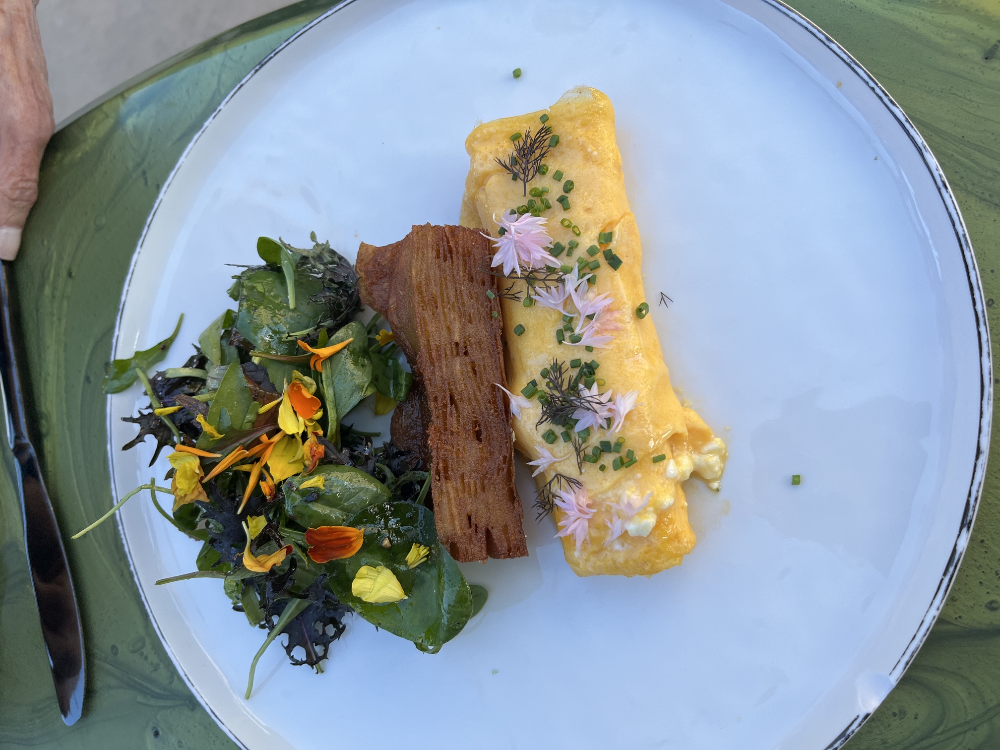
When I asked Steven about his favorite thing, his answer was thoughtful and poetic. He said he loves finding beauty in unexpected places and Palm Springs is the perfect place for that. For Steven, the desert represents “the beauty of survival.” In a landscape that appears dry, harsh, and unforgiving, life somehow persists. A single daisy blooming through parched earth becomes a reminder that beauty can thrive even under the toughest conditions. In a place where nearly everything seems designed to challenge survival, the desert still manages to surprise you with resilience, color, and grace.
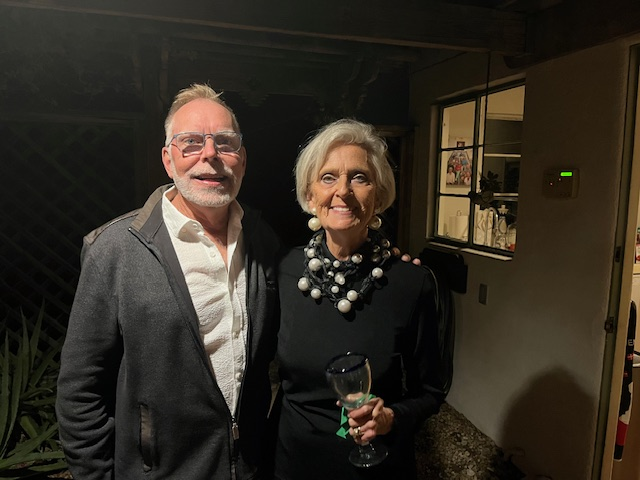
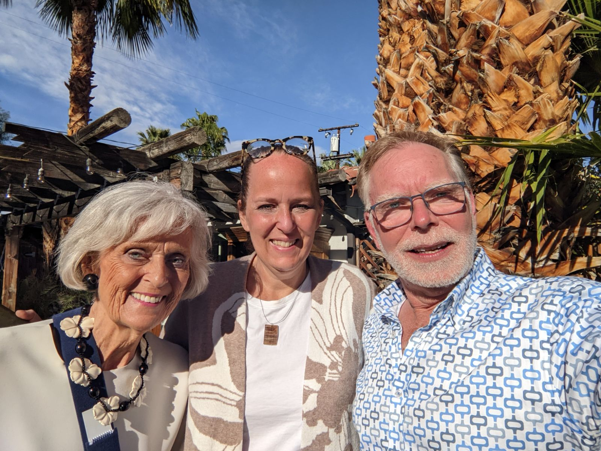
Posie Fisher and Judy Hudgens
Posie first made a name for herself in Chicago’s shoe business before transitioning into the world of estate sales, where her keen eye for design and hidden treasures found a natural home. It’s no surprise that she was eventually drawn to Palm Springs, a city celebrated for its rich collection of mid-century modern architecture, art, and décor. Today, Posie splits her time between Chicago, a modern townhouse in Sandburg Village and Palm Springs, embracing the best of both worlds.
Posie and her sister, Judy, rented a home designed by renowned modernist architect Albert Frey. They fell so deeply in love with the house and its desert surroundings that her Judy later purchased it, preserving its architectural character and timeless style.
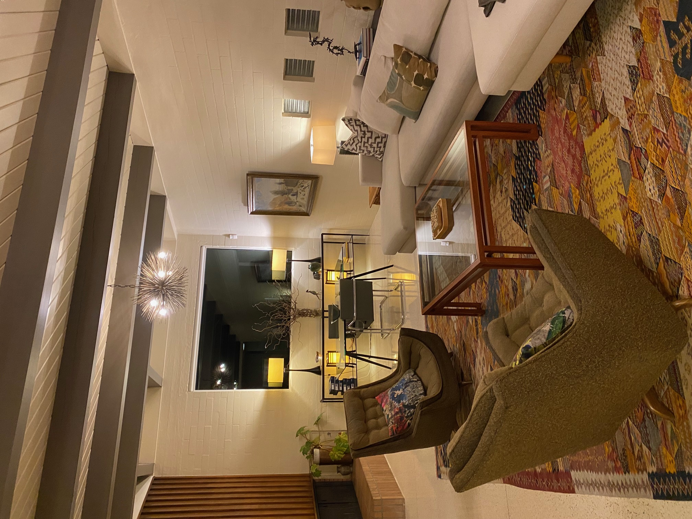
When asked about their favorite things, the sisters spoke less about possessions and more about curiosity, connection, and belonging. They love the atmosphere of Palm Springs, a place they say encourages people to embrace themselves fully. For them, the desert offers not only beauty and inspiration, but also a sense of openness and acceptance that keeps drawing them back.
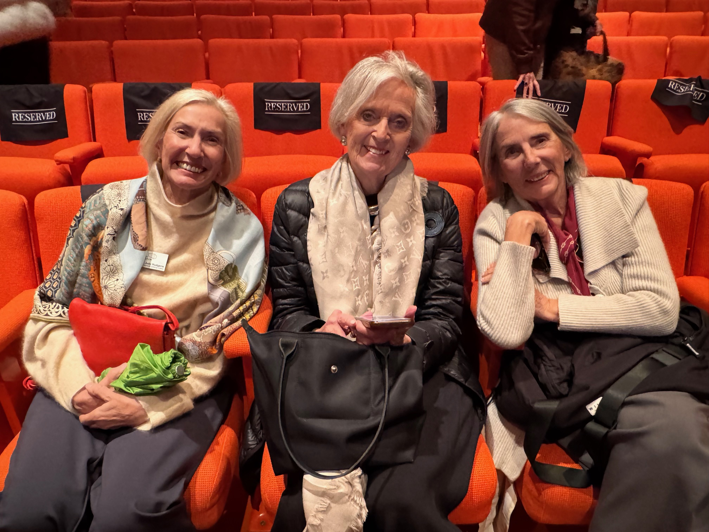
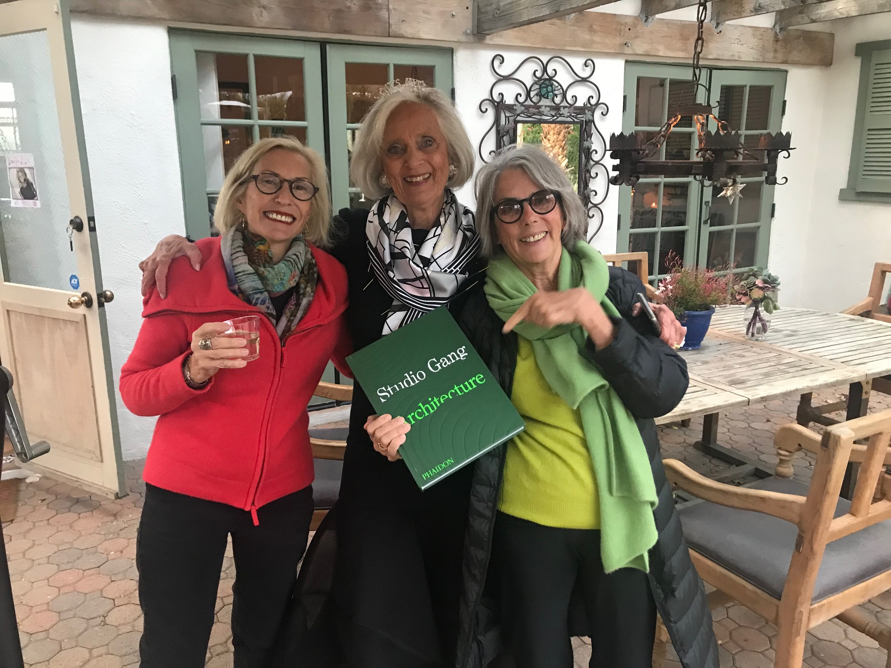
Jerry Sanfilippo and Spyros Petros
Jerry Sanfilippo and Spyros Petros are two more of my designer friends who traded Chicago winters for the sunshine and creativity of Palm Springs. Together, they opened a charming design collective called The Shops at Thirteen Forty Five, a beautifully curated space showcasing artists, designers, and unique home treasures that reflect the spirit of the desert and their impeccable eye for style.
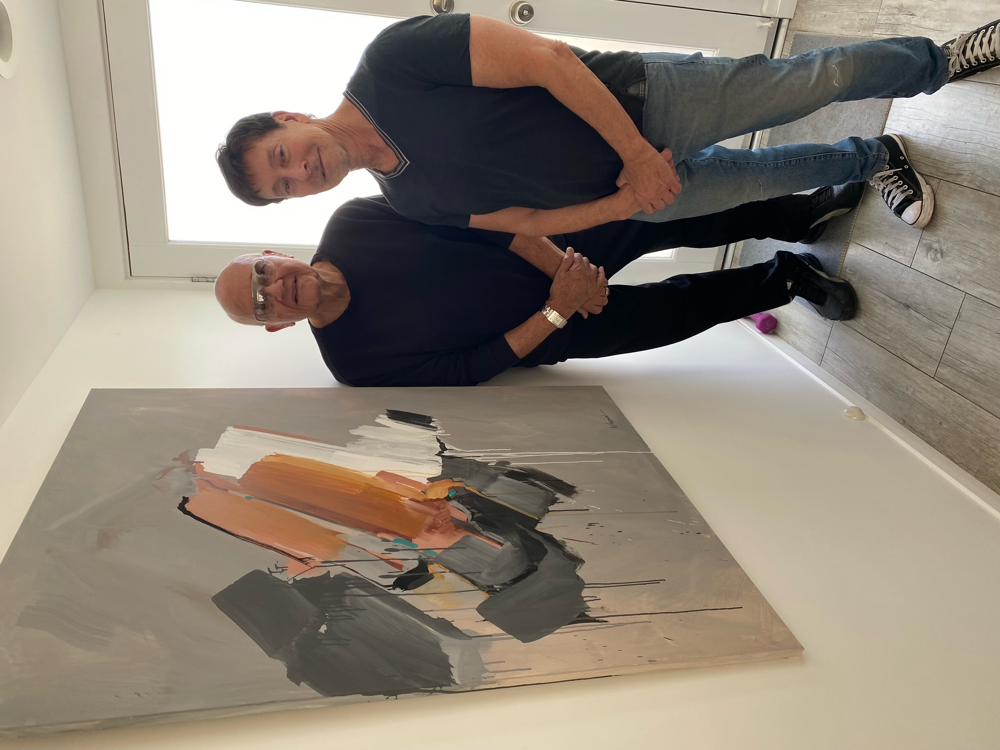
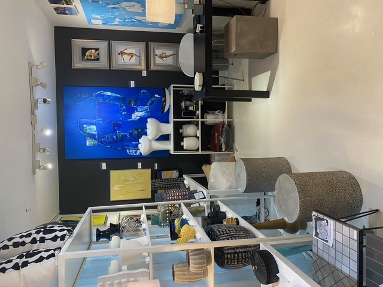
For both Jerry and Spyros, Palm Springs represents more than just a change of scenery. It’s a lifestyle. Spyros says his favorite things are a peaceful life, good friends, endless sunshine, and spending summers in his native Greece. Together, the pair have created a life filled with creativity, warmth, and community, perfectly suited to the relaxed elegance of Palm Springs.
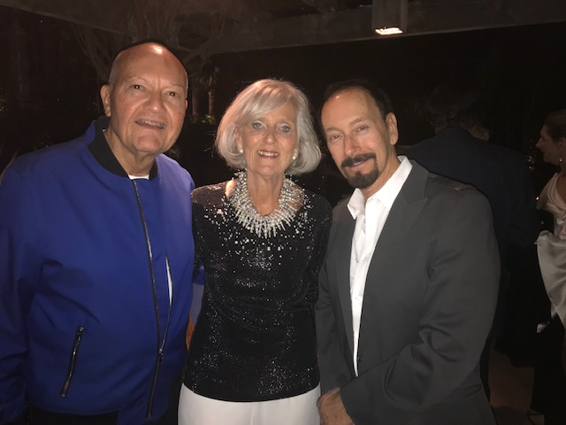
Tracy Kupferberg
Tracy Kupferberg divides her time between Chicago and Palm Springs, embracing the unique beauty and rhythm of both places. Her love of hiking, walking, and nature is what first drew her to the desert, where she now lives in a striking modern Krisel house near the Indian Canyons. Whether she’s strolling through the neighborhoods of Chicago or hiking the scenic desert trails of Palm Springs, Tracy finds joy in simply being outdoors and taking in her surroundings.
When asked about her favorite things, Tracy says she treasures the quiet pleasure of listening to audiobooks and podcasts during her daily walks. Those moments of movement, reflection, and discovery have become part of the lifestyle she loves most. I also owe Tracy a special thank you, as she was the person who first introduced me to Palm Springs, beginning my own love affair with the desert.
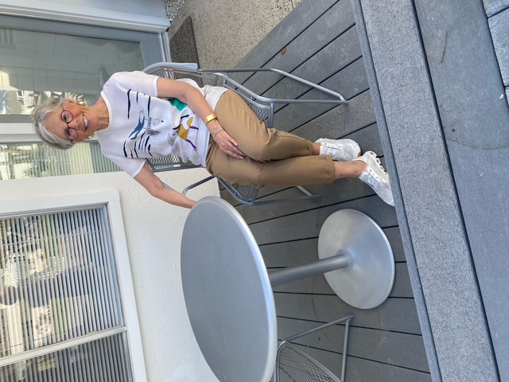
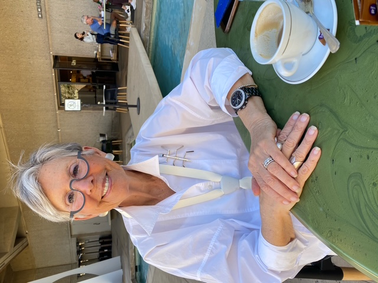
John and Rommy Drummond
John Drummond was a dear friend of my late husband, Peter, and now lives in Lake Forest with his wife, Rommy. John previously served as Assistant Commissioner of Aviation for the City of Chicago.
Rommy writes for the Weedpatch Gazette, focusing on plants and the environment, and is currently working on a paper about the Revolutionary War and one of John’s ancestors from Philadelphia.
They have made several trips to Palm Springs over the years, carrying with them a sense of ease and familiarity.
John’s favorite thing are his friends. He believes that friendship is the cornerstone of life as you get older. Rommy’s favorite things are writing and gardening, both of which reflect her curiosity and care for the world around her.
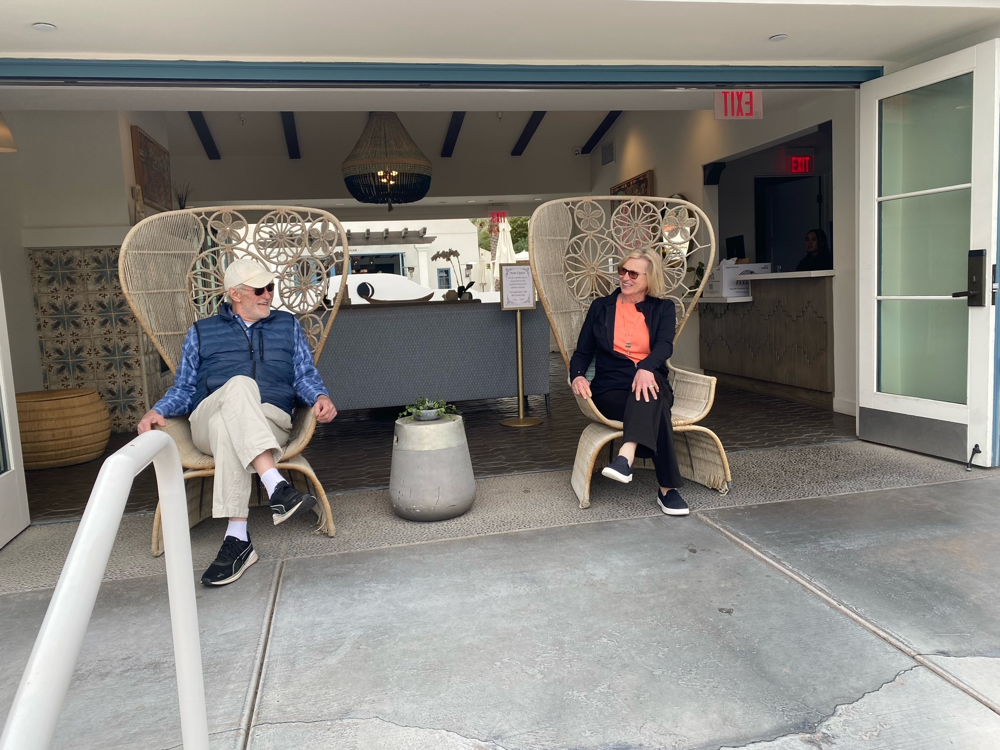
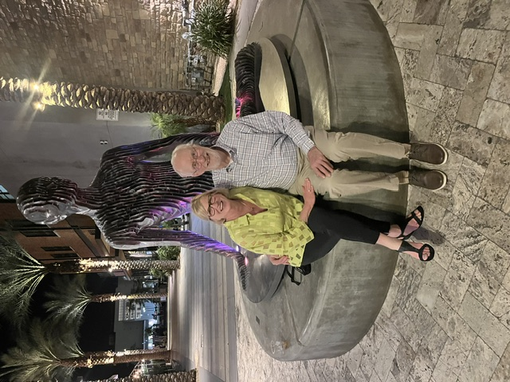
Lyn Rothman and Bernie Bubman
Lyn Rothman and Bernie Bubman are part of a circle of friends whose lives move easily between art, music, and place. Lyn and I originally met in Roccamare, Italy through the late Sir Georg Solti, and after many years reconnected in Palm Springs. Lyn now splits her time between Los Angeles and Palm Springs, where she recently married Chicagoan Bernie Bubman in Los Angeles. Lyn is also an honorary fellow at University College London, a reflection of her deep engagement with culture and the arts.
Lyn’s favorite things are art, flowers, and browsing antique shops in search of unexpected treasures. Through her, I was introduced to photographer Michael Childers, known for portraits including work featuring David Hockney, some of which are part of the collection at the Palm Springs Art Museum.
Bernie’s favorite thing is the fourth movement of Beethoven’s Symphony No. 9 (Ode to Joy), a piece that captures his love of joy and meaning and complements the rhythm of their shared life.
Barbara Koren and Paul Gearen
Two Chicago friends who now spend time in Arizona make an annual tradition of returning to the desert for the tennis season in Indian Wells, where the matches at the BNP Paribas Open have become a familiar and anticipated ritual. Their visits always include evenings out, often gathering over dinner at Il Corso, where the conversations are as much a part of the tradition as the tournament itself.
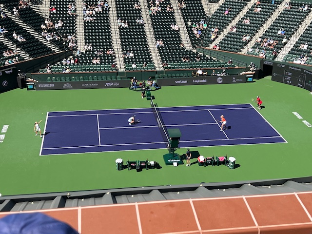
Barbara’s favorite thing is a great book — the kind that draws her in completely and lingers long after the final page. Paul’s favorite thing is music, especially jazz, which he listens to with a deep appreciation for its rhythm, improvisation, and soul. Together, they bring a sense of ease and continuity to each desert season, returning year after year to a place that has quietly become part of their shared rhythm.
Bunny Fisher
Bunny’s life story spans cities, stages, and entirely different careers. Originally from Los Angeles, she spent two decades in Chicago before later living in northwest Indiana, eventually settling in Palm Springs, a place that seemed to welcome her many reinventions.
Before stepping into the world of performance, Bunny worked for 16 years as a speech and language pathologist at Children’s Memorial Hospital (now known as the Lurie Children’s Hospital of Chicago), dedicating herself to helping children find their voices. She also pursued acting, but it wasn’t until the age of 51 that she began singing, a late start that opened the door to an unexpected second act as a cabaret performer at venues throughout Palm Springs.
Today, Bunny describes her favorite thing simply as surrounding herself with lovely people. It’s a sentiment that reflects both her warmth and the community she has built around her — shaped by resilience, reinvention, and a lifelong embrace of new beginnings.
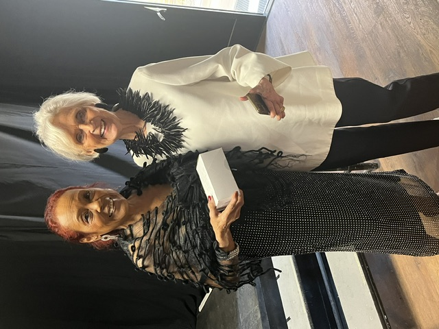
Colin Fisher
I first met Colin at his Palm Springs art gallery. Colin Fisher brings a distinctly cultivated eye to everything he touches. Originally from Winnetka, Illinois, he was a noted Chicago personality before opening Colin Fisher Studios in Palm Springs. Now based in Fargo, North Dakota, Colin still returns often to Palm Springs, continually inspired by its architecture, light, and vibrant design culture. He is especially admired for his impeccable taste and remarkable ability to display and hang artwork with effortless balance. Colin has a talent for blending sleek modern pieces with the warmth and elegance of Biedermeier furnishings, creating interiors that feel both timeless and unexpected.
Colin’s favorite thing is the hunt itself — he enjoys perusing galleries, estate sales, thrift shops, and flea markets in search of treasures with character, history, and soul.
As I look back on these stories, I’m struck by how differently each person defines “favorite things,” and yet how much they all have in common. Whether it’s art, music, family, books, gardens, or simply a blue sky over palm trees. Palm Springs has a way of drawing those things out. In sharing their stories, I’m reminded that favorite things are rarely just things at all, but the people, places, and moments that quietly shape who we become.